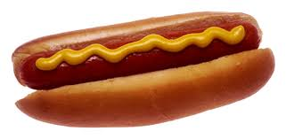

American Hotdog

A hot dog is a dish consisting of a grilled, steamed, or boiled sausage served in the slit of a partially sliced bun.
Ingredients
- 4 beef frankfurters
- 4 hotdog buns
- 1 small onions
- 3-4 teaspoons sweet pickle
- 1 cold-pack kosher dill picke
- 1 small tomato
Steps
- Simmer frankfurters in beer or water for approximately 10 minutes.
- Warm buns in microwave, until slightly warm and soft.
- To assemble hot dogs, place frank in each bun.
- Add mustard to taste; top with dill spear, relish, onion, tomato, and 1-2 sport peppers
- Sprinkle with celery and poppy seeds.
- Serve.